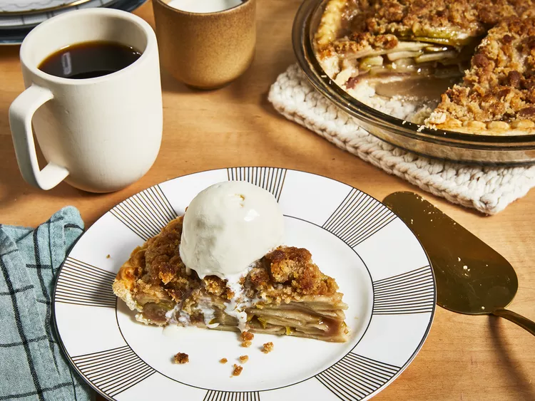

Apple pie is a holiday season favorite, From Thanksgiving to Christmas, the tasty pie is certainly at its peak.
But the all-American pie is enjoyed all year round, too, simply because it's just that good—not much compares to eating a slice of warm apple pie with its sweet and spicy flavors and the feeling of nostalgia one bite can bring.